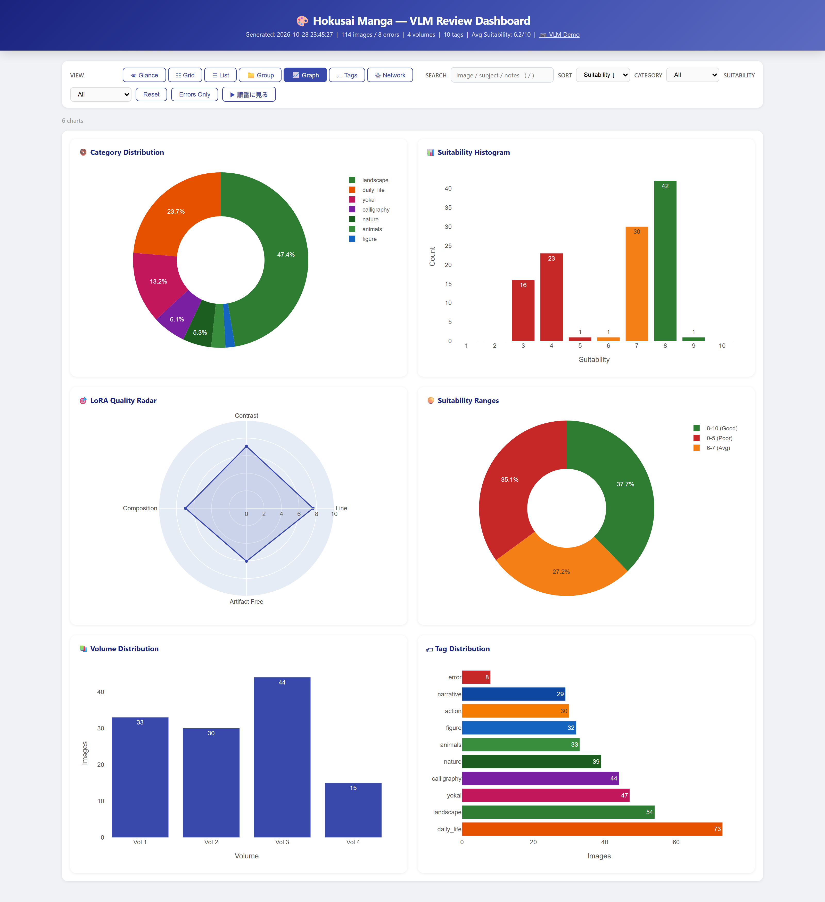
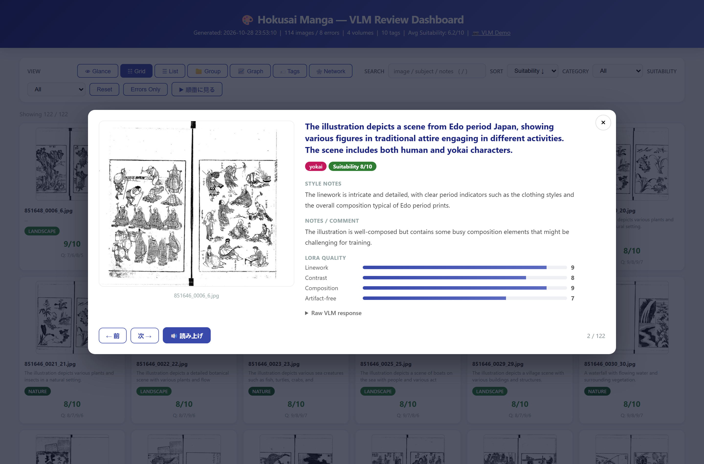

🎨 Hokusai Manga Dataset
北斎漫画の VLM 注釈データセットと可視化ツール。
📸 Screenshots
 Glance — KPI カードと高評価サンプル。上部に検索・ソート・カテゴリ絞り込み。
Glance — KPI カードと高評価サンプル。上部に検索・ソート・カテゴリ絞り込み。

Graph — カテゴリ分布 / 適合度ヒストグラム / LoRA品質レーダー / 適合度レンジ / 巻分布 / タグ分布。

順番に見る — 現在の絞り込み順に 1 枚ずつ読む詳細ビュー（← / → キー、読み上げ、Raw VLM response）。